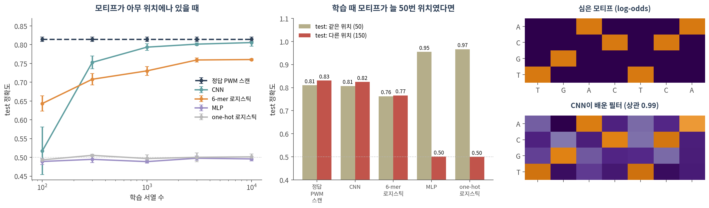
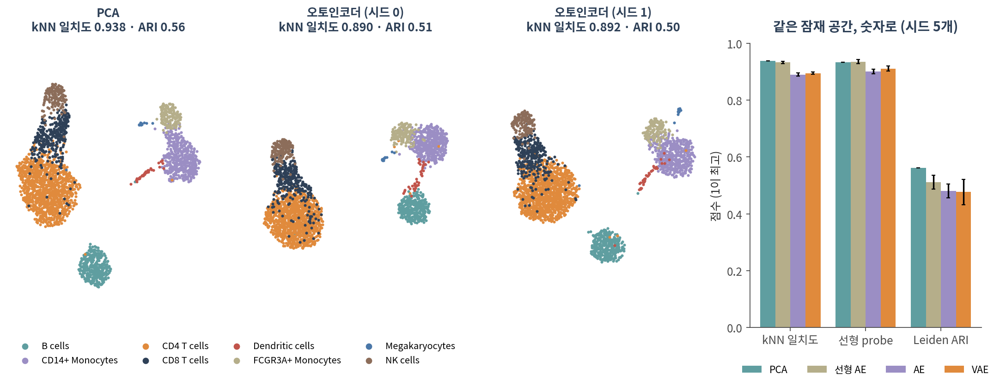

10. 알아둘 만한 아키텍처
이 챕터를 마치면 다음을 할 수 있습니다.
- 아키텍처를 이름이 아니라 어떤 가정(귀납 편향)을 넣었는가로 설명할 수 있다
- CNN의 지역성·가중치 공유가 서열 모티프 탐지에 왜 맞는지 실측 숫자로 말할 수 있다
- ⚠️ 가정이 데이터와 맞지 않으면 오히려 손해라는 것을 예로 들 수 있다
- 오토인코더와 VAE의 구조를 그리고, 선형 오토인코더가 PCA와 같은 것을 배운다는 것을 설명할 수 있다
- ⚠️ 두 잠재 공간을 UMAP 그림이 아니라 수치로 비교할 수 있다
- 어텐션이 무엇을 계산하는지 말하고, 12의 GAT·13의 그래프 트랜스포머와 연결할 수 있다
🤔 생각해볼 질문
methods에 “CNN 기반”, “VAE 기반”, “트랜스포머 기반”이라고 적혀 있습니다. 이름 말고 무엇을 확인해야 하나요?
1. CNN — 서열 위를 미끄러지는 모티프 스캐너 🔍
1) 아키텍처는 가정이다
- 귀납 편향(inductive bias) — 데이터를 보기 전에 모델에 넣어둔 가정. “어떤 함수부터 먼저 고려할 것인가”
- 08·09의 MLP는 가정이 거의 없습니다. 입력 800개가 서로 어떤 관계인지 모르고 전부 데이터에서 배웁니다 → 그래서 데이터가 많이 필요합니다
- 이 챕터의 구조들은 각자 데이터의 모양에 대한 가정을 하나씩 넣은 것입니다 (Battaglia et al. 2018)
- 💡 Part 1과 같은 이야기입니다. 그래프를 만드는 순간 “이 쌍이 관련 있다”는 가정을 넣었습니다 (🔗 01 §3)
2) 합성곱 = 지역성 + 가중치 공유
- PWM 스캔을 떠올리세요. 모티프의 위치별 가중치 행렬(4 염기 × 폭)을 서열 위로 한 칸씩 밀며 점수를 매깁니다
- 1D 합성곱 필터가 정확히 그 연산입니다. 다른 점은 PWM을 사람이 주지 않고 학습한다는 것 하나
| 가정 | 뜻 | 구현 |
|---|---|---|
| 지역성 | 의미 있는 패턴은 가까이 붙은 염기 몇 개로 이루어진다 | 필터 폭 12 — 한 번에 12 bp만 봄 |
| 가중치 공유 | 같은 모티프는 어디 있든 같은 뜻이다 | 모든 위치에 같은 필터 |
| 위치 무시 | 있기만 하면 된다, 어디 있는지는 상관없다 | 전역 max pooling — 가장 센 반응 하나만 남김 |
- 파라미터 수가 극적으로 줄어듭니다 — 필터 16개 × 폭 12 CNN은 801개, 같은 입력(one-hot 800)에 은닉 64개 MLP는 51,329개
- 생물학 예: 단백질 결합 서열 특이성 예측(DeepBind; Alipanahi et al. 2015), 비부호화 변이 효과 예측(DeepSEA; Zhou & Troyanskaya 2015), 염색질 접근성(Basset; Kelley et al. 2016)
3) 실측 — 모티프를 심은 합성 DNA

모티프가 아무 위치에나 있을 때 (그림 왼쪽)
| 학습 서열 수 | 정답 PWM 스캔 (상한) | CNN | 6-mer 빈도 + 로지스틱 | MLP | one-hot 로지스틱 |
|---|---|---|---|---|---|
| 100 | 0.814 | 0.517 | 0.643 | 0.489 | 0.493 |
| 300 | 0.814 | 0.753 | 0.708 | 0.495 | 0.505 |
| 1,000 | 0.814 | 0.793 | 0.730 | 0.489 | 0.497 |
| 10,000 | 0.814 | 0.806 | 0.760 | 0.496 | 0.501 |
- 정답 PWM 스캔 — 심은 모티프를 알고 가장 높은 점수로 판정. 모티프에 돌연변이가 섞여 있고 무작위 서열에도 비슷한 조각이 우연히 생기므로 0.81이 도달 가능한 상한입니다
- ✅ CNN은 학습 1,000개에서 상한 가까이(0.793) 갑니다
- ⚠️ MLP와 one-hot 로지스틱 회귀는 학습 10,000개에서도 0.50 — 전혀 배우지 못했습니다. 모티프가 194곳 중 어디에 올지 모르므로, 위치마다 따로 배워야 합니다
- 💡 6-mer 빈도는 사람이 넣은 귀납 편향입니다 (위치를 버리고 짧은 단어만 셈). 학습 100개에서는 CNN보다 나았습니다 — 가정이 강할수록 적은 데이터로 버팁니다
4) ⚠️ 가정이 틀리면 손해다
학습 때 모티프가 늘 50번 위치에만 있었다면? (그림 가운데, 시드 3개 평균)
| test | 정답 PWM 스캔 | CNN | 6-mer + 로지스틱 | MLP | one-hot 로지스틱 |
|---|---|---|---|---|---|
| 같은 위치 (50) | 0.810 | 0.807 | 0.762 | 0.955 | 0.966 |
| 다른 위치 (150) | 0.831 | 0.824 | 0.766 | 0.501 | 0.500 |
- 위치가 고정되면 MLP와 로지스틱 회귀가 CNN보다 훨씬 낫습니다. “50번 자리만 보면 된다”는 정보를 쓰기 때문입니다 — CNN은 max pooling으로 그 정보를 스스로 버립니다
- ⚠️ 그러나 모티프를 150번으로 옮기면 MLP와 로지스틱 회귀는 우연 수준(0.50). 배운 것은 “모티프”가 아니라 “50번 자리의 모티프”였습니다
- ✅ 결론: 귀납 편향은 공짜가 아닙니다. 데이터가 실제로 그 가정을 따를 때만 이득입니다
필터는 정말 모티프가 되었나 (그림 오른쪽)
- 필터 16개 중 3개가 심은 모티프의 log-odds와 상관 0.96 이상이었습니다 (최고 0.99). 나머지 13개는 0.35 이하
- 가장 닮은 필터가 최대로 반응한 위치가 심은 위치와 정확히 일치한 비율: 양성 test 서열의 83%
- ⚠️ 이렇게 깔끔한 것은 필터 폭·pooling을 그렇게 설계했기 때문입니다. 층을 깊게 쌓아 부분 모티프를 조립하게 만들면 첫 층 필터는 모티프의 조각만 배우는 경향이 있습니다 (Koo & Eddy 2019). 필터를 “발견한 모티프”로 보고하기 전에 구조부터 확인하세요
Colab에서 실행합니다. torch는 Colab에 이미 있습니다. CPU에서 몇 분 걸립니다 (모델 4개 × 100 epoch).
import numpy as np, torch, torch.nn as nn
# ── 1. 합성 DNA: 양성에만 모티프 TGACTCA를 심는다 ────────────────────
L, MOTIF = 200, "TGACTCA"
IDX = np.array(["ACGT".index(b) for b in MOTIF])
def make(n, rng, pos=None):
S = rng.integers(0, 4, (n, L)) # 무작위 서열 (0=A 1=C 2=G 3=T)
y = rng.permutation(np.arange(n) % 2) # 절반은 양성
for i in range(n):
m = IDX.copy()
if y[i]: # 양성: 자리마다 10% 확률로 다른 염기
mut = rng.random(len(m)) < 0.1
m[mut] = (m[mut] + rng.integers(1, 4, mut.sum())) % 4
else: # 음성: 같은 염기를 순서만 섞어서
while (m == IDX).all():
m = rng.permutation(IDX)
p = rng.integers(0, L - len(m) + 1) if pos is None else pos
S[i, p:p + len(m)] = m
X = np.eye(4, dtype=np.float32)[S].transpose(0, 2, 1) # one-hot (n, 4, L)
return torch.tensor(X), torch.tensor(y, dtype=torch.float32)
# ── 2. CNN(필터 16개 × 폭 12, 전역 max pooling) vs MLP ─────────────────
class CNN(nn.Module):
def __init__(self):
super().__init__()
self.conv = nn.Conv1d(4, 16, kernel_size=12) # 필터 하나 = 학습되는 PWM
self.fc = nn.Linear(16, 1)
def forward(self, x):
h = torch.relu(self.conv(x)) # 모든 위치를 같은 필터로 스캔
return self.fc(h.max(dim=2).values).squeeze(1) # 위치는 잊고 가장 센 반응만
def MLP():
return nn.Sequential(nn.Flatten(), nn.Linear(4 * L, 64), nn.ReLU(),
nn.Linear(64, 1), nn.Flatten(0))
def train(model, X, y, epochs=100):
opt = torch.optim.Adam(model.parameters(), lr=1e-3)
loss_fn = nn.BCEWithLogitsLoss()
for _ in range(epochs):
for b in torch.randperm(len(y)).split(64):
opt.zero_grad(); loss_fn(model(X[b]), y[b]).backward(); opt.step()
return model.eval()
def acc(model, X, y):
with torch.no_grad():
return ((model(X) > 0).float() == y).float().mean().item()
rng = np.random.default_rng(0)
Xtr, ytr = make(3000, rng)
Xte, yte = make(2000, rng)
torch.manual_seed(0); cnn = train(CNN(), Xtr, ytr)
torch.manual_seed(0); mlp = train(MLP(), Xtr, ytr)
print(f"모티프가 아무 데나 CNN {acc(cnn, Xte, yte):.3f} MLP {acc(mlp, Xte, yte):.3f}")
# ── 3. ⚠️ 학습 때 모티프가 늘 50번 자리였다면 ──────────────────────────
Xtr, ytr = make(3000, rng, pos=50)
torch.manual_seed(0); cnn50 = train(CNN(), Xtr, ytr)
torch.manual_seed(0); mlp50 = train(MLP(), Xtr, ytr)
for p in (50, 150):
X, y = make(2000, rng, pos=p)
print(f"test 위치 {p:3d} CNN {acc(cnn50, X, y):.3f} MLP {acc(mlp50, X, y):.3f}")
# ── 4. 필터가 모티프가 되었나 — 가장 큰 필터를 서열로 읽기 ───────────────
W = cnn.conv.weight.detach() # (필터 16, 염기 4, 폭 12)
for f in W.norm(dim=(1, 2)).argsort(descending=True)[:3]:
print("필터", int(f), "".join("ACGT"[i] for i in W[f].argmax(0)),
f"(크기 {W[f].norm():.2f})")확인할 것:
- 첫 줄: CNN 0.795, MLP 0.501 — 같은 데이터, 같은 학습인데 MLP는 아무것도 배우지 못합니다
- 위치를 50으로 고정해 학습하면 같은 위치에서는 MLP가 이깁니다(0.943 vs 0.817). 150으로 옮기면 MLP 0.501, CNN 0.816
- 마지막 세 줄: 가장 큰 필터 셋을 가장 센 염기로 읽으면
CCTTTGACTCAT,CTTTTGACTCAG,TGACTCAACTGC— 세 필터 모두 TGACTCA를 품고 있습니다. 모티프를 알려준 적은 없습니다 nn.Conv1d의kernel_size를 4로 줄여 보세요. 필터가 모티프 전체를 담을 수 없게 되면 무슨 일이 생기나요?
5) RNN은 짧게
- 순환 신경망(RNN) — 서열을 한 칸씩 읽으며 은닉 상태를 갱신합니다. 가정: 순서대로 읽으면 앞의 정보가 뒤로 전달된다
- 멀리 떨어진 정보는 기울기가 여러 번 곱해지며 사라집니다 (🔗 08 §2의 기울기 소실) → LSTM이 게이트로 이를 완화했습니다 (Hochreiter & Schmidhuber 1997)
- 한 칸씩 읽어야 해서 병렬화가 어렵고, 지금은 긴 서열에도 §3의 어텐션 계열이 주로 쓰입니다
2. 오토인코더와 VAE — 압축하며 배운다 🗜️
1) 구조
입력 x → 인코더 → 잠재 z (좁은 병목) → 디코더 → 복원 x̂, 손실 = ‖x − x̂‖²
- 라벨이 필요 없습니다(비지도). 병목이 좁으니 복원에 꼭 필요한 정보만 z에 담기게 됩니다
- 가정: 데이터는 저차원 구조 위에 놓여 있다 — 유전자 1,838개가 세포 상태 몇 개의 조합으로 움직인다
- z가 사는 공간이 잠재 공간입니다. 단일세포 분석에서 PCA 자리에 이것을 씁니다 (Hinton & Salakhutdinov 2006)
💡 선형 오토인코더는 PCA입니다. 활성함수를 빼면 인코더·디코더가 행렬 하나씩으로 접히고(🔗 08 §1), 복원 오차를 최소화하는 해는 주성분과 같은 부분공간입니다 (Baldi & Hornik 1989). 비선형 활성함수가 있어야 PCA와 다른 것을 배울 수 있습니다.
2) VAE와 scVI
- VAE(변분 오토인코더) — 세포 하나를 점 z가 아니라 분포(평균 μ, 분산 σ²)로 보냅니다 (Kingma & Welling 2014)
- 손실 = 복원 오차 + KL 항(각 분포가 표준정규분포에서 너무 멀어지지 않게 묶음)
- 효과: 잠재 공간이 매끄러워지고, z를 뽑아 디코더에 넣으면 새 샘플을 생성할 수 있습니다
- scVI(Lopez et al. 2018)는 VAE를 단일세포에 맞춘 것입니다
| PCA | 오토인코더 | VAE | scVI | |
|---|---|---|---|---|
| 입력 | 정규화·표준화한 값 | 같음 | 같음 | 원래 count |
| 인코더 | 선형 | 비선형 | 비선형 → (μ, σ) | 비선형 → (μ, σ) |
| 손실 | 복원 오차 | 복원 오차 | 복원 + KL | count 분포의 우도 + KL |
| batch | — | — | — | batch를 디코더에 조건으로 넣음 |
- ✅ scVI의 핵심 가정: 관측된 count는 세포 상태 z, 시퀀싱 깊이, batch가 함께 만든 것이다. batch를 모델 안에 넣어 잠재 공간에서 빼냅니다
- ⚠️ 그 가정도 가정입니다. batch와 생물학적 조건이 섞여 있으면(🔗 09 §4) 어떤 모델도 둘을 가를 수 없습니다
3) ⚠️ 잠재 공간은 숫자로 비교한다

같은 세포를 PCA · 선형 AE · 비선형 AE · VAE로 10차원까지 줄이고, 라벨을 쓰지 않고 만든 잠재 공간이 세포유형을 얼마나 보존하는지 쟀습니다.
| 잠재 10차원 | kNN 일치도 | Leiden ARI (군집 수) | 선형 probe | 복원 오차 (held-out) |
|---|---|---|---|---|
| PCA | 0.938 | 0.562 (10) | 0.933 | 0.830 |
| 선형 오토인코더 | 0.933 ± 0.004 | 0.511 ± 0.025 (11.0) | 0.935 ± 0.007 | 0.831 |
| 오토인코더 (ReLU) | 0.890 ± 0.006 | 0.481 ± 0.025 (10.4) | 0.901 ± 0.008 | 0.835 |
| VAE | 0.895 ± 0.004 | 0.476 ± 0.045 (10.6) | 0.911 ± 0.009 | 0.834 |
(오토인코더 계열은 시드 5개의 평균 ± 표준편차. PCA는 결정적이라 한 번)
kNN 일치도 — 잠재 공간에서 가장 가까운 세포 15개 중 같은 세포유형의 비율
Leiden ARI — 잠재 공간으로 kNN 그래프를 만들어 Leiden(resolution 1.0)으로 나눈 결과와 라벨의 일치도 (🔗 05 §2)
선형 probe — 잠재 10차원으로 로지스틱 회귀를 학습해 세포유형을 맞히는 5-fold balanced accuracy
복원 오차 — 세포 80%로 학습하고 나머지 20%를 복원했을 때의 평균제곱오차
⚠️ 이 데이터에서는 비선형 오토인코더가 PCA보다 나은 점이 없었습니다. 네 지표 모두 PCA나 선형 오토인코더가 가장 좋았고, 비선형 오토인코더와 VAE가 가장 낮았습니다
비선형 오토인코더는 시드 5개 모두 약 10 epoch에서 validation 복원 오차가 바닥을 찍었습니다 — 그 뒤로는 외우기 시작했습니다 (🔗 09 §2)
선형 오토인코더는 복원 오차가 PCA와 같았지만(0.831 vs 0.830) PCA 좌표와의 정준상관은 평균 0.875였습니다. 이론상의 해(PCA 부분공간)에 경사하강이 완전히 도달하지는 않았습니다 — 🔗 08 §4의 “표현할 수 있다 ≠ 찾는다”
💡 그렇다고 오토인코더가 쓸모없다는 뜻은 아닙니다. 이 비교는 표준화까지 끝난 유전자 1,838개, 기증자 한 명이라는 가장 단순한 조건이고, scVI 계열의 강점(count 분포, batch, 여러 데이터 통합)은 여기서 시험되지 않았습니다. 결론은 09와 같습니다 — 재봐야 압니다
⚠️ 라벨이 어디서 왔는지 보세요. 이 데이터의 세포유형은 scanpy 튜토리얼 흐름대로 PCA 성분으로 kNN 그래프(k = 10)를 만들고, 그 위의 Louvain 군집에 마커 유전자로 이름을 붙인 것입니다. 정답 자체가 PCA 쪽에 유리하게 만들어졌을 수 있습니다 → 13에서 다시
⚠️ 그림은 측정이 아닙니다. 그림 왼쪽 세 UMAP은 모두 “깔끔한 섬들”로 보입니다. 시드만 바꾼 두 오토인코더의 UMAP은 섬의 배치가 다르지만 수치는 거의 같습니다. UMAP·t-SNE는 거리와 군집 크기를 왜곡하므로 그 모양으로 방법을 비교하면 안 됩니다 (Kobak & Berens 2019; Chari & Pachter 2023)
Colab에서 실행합니다. !pip install -q scanpy 먼저 (90. Colab 환경 설정). 1분 안쪽으로 끝납니다.
import warnings; warnings.filterwarnings("ignore")
import numpy as np, scanpy as sc, torch, torch.nn as nn
from sklearn.decomposition import PCA
from sklearn.neighbors import NearestNeighbors
from sklearn.metrics import adjusted_rand_score
# ── 1. PBMC 3k: 세포 2,638 × 유전자 1,838 (정규화·표준화 완료) ──────────
adata = sc.datasets.pbmc3k_processed()
X = np.asarray(adata.X, dtype=np.float32)
lab = adata.obs["louvain"].astype(str).values # 세포유형 8개
print(X.shape, len(set(lab)))
# ── 2. 두 가지 10차원 잠재 공간: PCA와 오토인코더 ──────────────────────
Z = {"PCA": PCA(10, random_state=0).fit_transform(X)}
torch.manual_seed(0)
enc = nn.Sequential(nn.Linear(X.shape[1], 256), nn.ReLU(), nn.Linear(256, 10))
dec = nn.Sequential(nn.Linear(10, 256), nn.ReLU(), nn.Linear(256, X.shape[1]))
opt = torch.optim.Adam([*enc.parameters(), *dec.parameters()], lr=1e-3)
Xt = torch.tensor(X)
for epoch in range(10): # 본문 실험의 early stopping 지점 근처
for b in torch.randperm(len(Xt)).split(128):
opt.zero_grad()
loss = ((dec(enc(Xt[b])) - Xt[b]) ** 2).mean() # 복원 오차 — 라벨은 쓰지 않음
loss.backward(); opt.step()
with torch.no_grad():
Z["오토인코더"] = enc(Xt).numpy()
# ── 3. 그림 말고 숫자로 비교 ─────────────────────────────────────────
def knn_agree(z, k=15):
idx = NearestNeighbors(n_neighbors=k + 1).fit(z).kneighbors(z, return_distance=False)[:, 1:]
return (lab[idx] == lab[:, None]).mean()
def leiden_ari(z):
a = sc.AnnData(z); a.obs["type"] = lab
sc.pp.neighbors(a, n_neighbors=15, use_rep="X", random_state=0)
sc.tl.leiden(a, resolution=1.0, flavor="igraph", n_iterations=2, random_state=0)
return adjusted_rand_score(lab, a.obs["leiden"]), a
for name, z in Z.items():
ari, a = leiden_ari(z)
print(f"{name:6s} kNN 일치도 {knn_agree(z):.3f} Leiden ARI {ari:.3f}"
f" (군집 {a.obs['leiden'].nunique()}개)")
# 그림은 숫자 옆에 — 모양으로 판단하지 말 것
# sc.tl.umap(a, random_state=0); sc.pl.umap(a, color="type", title=f"{name} ARI {ari:.2f}")확인할 것:
(2638, 1838) 8— 세포 2,638개, 유전자 1,838개, 세포유형 8개- PCA는 kNN 일치도 0.938, Leiden ARI 0.562 (군집 10개), 오토인코더는 0.891, 0.478 (군집 12개) — 위 표와 같은 방향입니다
- 마지막 주석 줄을 풀어 UMAP을 그려보세요. 두 그림 모두 “깔끔해” 보일 것입니다. 그림만 봤다면 어느 쪽이 낫다고 했을까요?
range(10)을range(100)으로 바꿔 오래 학습시켜 보세요. 복원 오차는 줄지만 kNN 일치도는 어떻게 되나요?
3. 어텐션 — 어디를 볼지 입력마다 정한다 👀
1) 무엇을 계산하나
위치(또는 토큰) i가 다른 위치 j들의 정보를 모을 때:
\[ \text{출력}_i = \sum_j a_{ij}\, v_j, \qquad a_{ij} = \operatorname{softmax}_j\!\left(\frac{q_i \cdot k_j}{\sqrt{d}}\right) \]
- q (query) — i가 찾는 것, k (key) — j가 가진 것의 이름표, v (value) — j가 실제로 넘겨주는 내용. 셋 다 입력에 학습되는 행렬을 곱해 만듭니다
- 가중치 \(a_{ij}\)는 입력마다 새로 계산됩니다. CNN 필터는 학습이 끝나면 고정되고 폭 12 안만 보지만, 어텐션은 서열 전체의 아무 쌍이나 볼 수 있습니다
- 대가: 길이 L이면 쌍이 L²개 → 긴 서열에서 계산량이 급격히 늘어납니다
- 트랜스포머는 이 연산(self-attention)을 층으로 쌓은 구조입니다 (Bahdanau et al. 2015; Vaswani et al. 2017)
- 생물학 예: Enformer는 서열에서 유전자 발현을 예측하며 멀리 떨어진 조절 요소와의 상호작용을 어텐션으로 통합했습니다 (Avsec et al. 2021)
2) 그래프로 보면
- self-attention = 모든 위치가 서로 연결된 완전 그래프 위에서, 엣지 가중치 \(a_{ij}\)를 학습하며 이웃 정보를 가중 평균하는 것
- 이것을 실제 그래프의 이웃에만 적용하면 → 12의 GAT(graph attention network)
- 다시 모든 노드 쌍으로 넓히고 그래프 구조는 위치 정보로 넣으면 → 13의 그래프 트랜스포머
- 💡 가정의 차이: GAT는 “관련 있는 쌍은 그래프가 알려준다”, 트랜스포머는 “관련 있는 쌍도 데이터에서 배운다” — 후자는 더 유연하고, 그만큼 데이터를 더 요구합니다
3) ⚠️ 어텐션 가중치는 설명이 아니다
- “모델이 이 영역에 주목했다”는 히트맵이 논문에 자주 나옵니다
- ⚠️ 학습된 어텐션 가중치는 기울기 기반 중요도와 자주 상관이 없었고, 아주 다른 어텐션 분포로도 같은 예측을 낼 수 있었습니다 (Jain & Wallace 2019)
- 반론도 있습니다 — 조건에 따라 설명으로 쓸 여지가 있다 (Wiegreffe & Pinter 2019). 즉 자동으로 설명이 되지는 않습니다
- ✅ 중요도를 주장하려면 그 영역을 지우거나 바꿨을 때 예측이 실제로 바뀌는지 개입해서 확인하세요 — §1-4의 위치 옮기기와 같은 방식입니다
4. 정리 — 이름 대신 가정을 읽는다 🧭
| 구조 | 넣은 가정 (귀납 편향) | 잘 맞는 데이터 | 가정이 틀리면 |
|---|---|---|---|
| MLP | 거의 없음 — 입력 사이 관계를 모두 데이터에서 | 표 (발현 행렬) | 데이터가 아주 많이 필요 (§1-3에서 0.50) |
| CNN | 지역성, 가중치 공유, (pooling 시) 위치 무시 | 서열, 이미지 | 위치가 중요한 신호를 버림 (§1-4) |
| RNN | 순서대로 읽으며 상태를 누적 | 서열, 시계열 | 먼 거리 정보가 약해짐 |
| 오토인코더 / VAE | 데이터는 저차원 구조 위에 있다 | 단일세포 발현 | 복원에 필요 없는 신호(드문 세포)를 버릴 수 있음 |
| 어텐션 / 트랜스포머 | 관련 있는 쌍을 입력마다 새로 정한다 | 긴 서열, 집합 | 쌍이 L²개 — 데이터와 계산을 많이 요구 |
| GNN (12) | 관계는 그래프로 주어진다, 이웃 순서는 무의미 | 네트워크 | 그래프가 틀리거나 이웃이 서로 다르면 해로움 |
✅ methods에서 “OO 기반”을 읽으면 세 가지를 물으세요.
- ✅ 이 구조는 어떤 가정을 넣었나? 그 가정이 이 데이터에 맞나?
- ✅ 그 가정이 없는 모델(로지스틱 회귀, MLP)이나 더 단순한 가정(k-mer 빈도, PCA)과 같은 조건에서 비교했나? (🔗 09 §3)
- ✅ “모델이 발견한 것”(필터, 어텐션, 잠재 공간 그림)을 개입이나 수치로 확인했나?
📝 요약
- 아키텍처는 이름이 아니라 넣은 가정(귀납 편향)으로 읽습니다. 가정이 맞으면 적은 데이터로 배우고, 틀리면 손해를 봅니다
- CNN = 지역성 + 가중치 공유 + pooling = 학습되는 PWM 스캐너. 합성 DNA에서 학습 1,000개로 상한(0.81) 근처인 0.79에 도달했고, 필터 3개가 심은 모티프와 상관 0.96 이상이었습니다
- ⚠️ 같은 데이터에서 MLP는 학습 10,000개로도 0.50이었습니다. 반대로 모티프 위치가 고정되면 MLP가 CNN보다 나았고(0.955 vs 0.807), 위치를 옮기자 0.50으로 무너졌습니다
- 오토인코더는 병목으로 압축하며 잠재 공간을 배웁니다. 선형 오토인코더는 PCA와 같은 부분공간을 배웁니다
- VAE는 잠재를 분포로 만들고, scVI는 여기에 count 분포와 batch를 넣은 것입니다
- ⚠️ 잠재 공간은 kNN 일치도·군집 ARI·probe 같은 수치로 비교합니다. PBMC 3k에서는 PCA가 비선형 오토인코더·VAE보다 모든 지표에서 같거나 나았습니다 (kNN 일치도 0.938 vs 0.890)
- ⚠️ 평가 라벨이 한쪽 방법(PCA)으로 만들어졌다면 그 비교는 기울어져 있습니다. UMAP 모양은 비교의 근거가 아닙니다
- 어텐션 = 입력마다 새로 계산하는 가중 평균, 완전 그래프 위의 메시지 전달 → 12의 GAT. ⚠️ 어텐션 가중치는 설명이 아닙니다
➕ 더 읽을거리
귀납 편향
Battaglia PW, et al. Relational inductive biases, deep learning, and graph networks. arXiv. 2018.
Bronstein MM, Bruna J, Cohen T, Veličković P. Geometric deep learning: grids, groups, graphs, geodesics, and gauges. arXiv. 2021.
CNN과 서열
LeCun Y, Bottou L, Bengio Y, Haffner P. Gradient-based learning applied to document recognition. Proc IEEE. 1998.
Alipanahi B, et al. Predicting the sequence specificities of DNA- and RNA-binding proteins by deep learning. Nat Biotechnol. 2015. (DeepBind)
Zhou J, Troyanskaya OG. Predicting effects of noncoding variants with deep learning–based sequence model. Nat Methods. 2015. (DeepSEA)
Kelley DR, Snoek J, Rinn JL. Basset: learning the regulatory code of the accessible genome with deep convolutional neural networks. Genome Res. 2016.
Koo PK, Eddy SR. Representation learning of genomic sequence motifs with convolutional neural networks. PLoS Comput Biol. 2019.
Hochreiter S, Schmidhuber J. Long short-term memory. Neural Comput. 1997.
오토인코더와 잠재 공간
Baldi P, Hornik K. Neural networks and principal component analysis: learning from examples without local minima. Neural Netw. 1989.
Hinton GE, Salakhutdinov RR. Reducing the dimensionality of data with neural networks. Science. 2006.
Kingma DP, Welling M. Auto-encoding variational Bayes. ICLR. 2014.
Lopez R, Regier J, Cole MB, Jordan MI, Yosef N. Deep generative modeling for single-cell transcriptomics. Nat Methods. 2018. (scVI)
Kobak D, Berens P. The art of using t-SNE for single-cell transcriptomics. Nat Commun. 2019.
Chari T, Pachter L. The specious art of single-cell genomics. PLoS Comput Biol. 2023.
어텐션
Bahdanau D, Cho K, Bengio Y. Neural machine translation by jointly learning to align and translate. ICLR. 2015.
Vaswani A, et al. Attention is all you need. NeurIPS. 2017.
Avsec Ž, et al. Effective gene expression prediction from sequence by integrating long-range interactions. Nat Methods. 2021. (Enformer)
Jain S, Wallace BC. Attention is not explanation. NAACL. 2019.
Wiegreffe S, Pinter Y. Attention is not not explanation. EMNLP-IJCNLP. 2019.
이 챕터의 데이터와 도구
Wolf FA, Angerer P, Theis FJ. SCANPY: large-scale single-cell gene expression data analysis. Genome Biol. 2018. · PBMC 3k 튜토리얼
PyTorch — nn.Conv1d · nn.MultiheadAttention